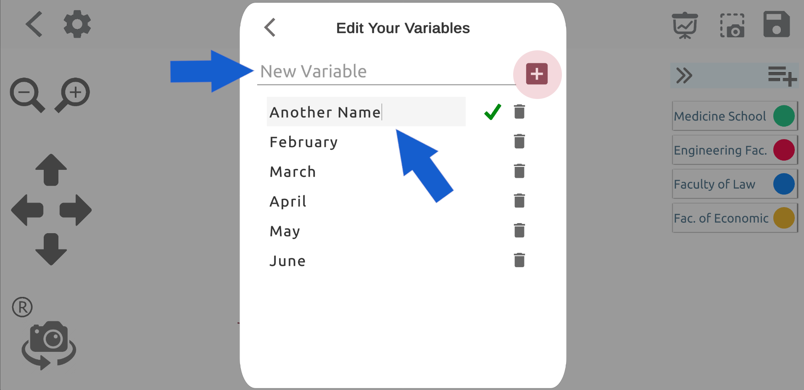

clkGraphs 3D - Graph Creation Guide
In this guide, we will try to explain how to create graphs with the clkGraphs 3D application and how to use the application in the most efficient way.
Manual Content
Creating Chart
Pie Chart
Settings Screen
Presentation Groups
Variables
Graphics Creation
Click on the plus-shaped add button on the main page and select the type of graphic you want to create.


Pie Chart
Let's imagine you chose the pie chart from the screen that opens and you will create a pie chart with the data you have.
The page will first open with the add element window. After you enter the value and clicked "Save" button, you will see the first version of pie chart as shown below.

Since a single element has been added to your chart at this point, it's normal to see an entire pie chart in one color in the middle area.
If you click on the "New Item" element shown with "1" in the picture below, you can see the color, name and value of the current element.
You can change your properties. If you want to add a new element to your chart, you can use the add element button indicated by "4".
You can give a new name to this drawing by clicking on the part indicated by "3" at the top of the screen.
You can set the label size on the graphic and add the graphic to a slide group by using "Settings"
button with indicated by "2".

Settings Window
The page below opens with the "Settings" button located at point two. The slider bar indicated by the number "1" on this page
Sets the size of the nametag next to the pie chart. At point "2" you can enter a group name for your work and
you can include your graphic in that group by pressing the (+) symbol on the side. Using the "3" dropdown list instead of creating a new group
you can choose one of the available groups.
So what do these groups do? Let's tell you about it now.

Presentations Groups
In the picture below, you can see the buttons "1", "2", "3" in the upper right. After entering the all your values you can save your chart
with using save button indicated by "3". The number "2" button is the screenshot button. When you enter your values and have your chart ready
you can either make your presentation from this page or add this image as a page to a slide group you created on the "Settings" page.
In this way, you can make presentations one after the other by adding different types of graphics to the same slide group.
Button "1" opens the slide group to which the graphic is attached.

A presentation group is exactly what it looks like below. The slide group named "My Presentations" appears on the screen.
Screenshots from different graphics are arranged horizontally endlessly. You can see other pictures by scrolling the list horizontally,
you can view them as a full page by clicking on them. In this way, you can create different types of graphics for a project, one after the other and
you can make a presentation. You can reorder the pictures with the "Edit" button on the top right.

You can delete the selected picture from the current slide group with the help of the "Delete" button as seen in the upper right below in full screen pictures.

Variables
In a pie chart, elements have only one variable, and that variable is the value of the element. But for other chart types (Bar, Column, Bubble)
elements can have multiple variables. To increase the number of variables in your chart, click the (+) button shown in the picture below.

You will see this screen where variables are added, edited or deleted. Here you can give new names to existing variables. You can delete variables or create a new one.
When you make a change on a variable or add a new variable, this change will be immediately reflected on the other elements in the graph.
After entering the value of the newly added variable for all elements, you can save your chart.

As you can see the variables of the elements are displayed on the graph. You can change whether to show axis lines and informations on the settings screen.
In addition, you can view the graphic from different angles with the camera buttons on the left side of the screen, and you can take multiple screenshots
from different angles in crowded graphics.

In bar, column, and bubble charts, you can click on the diagram models to hide or make visible the information label above the model.